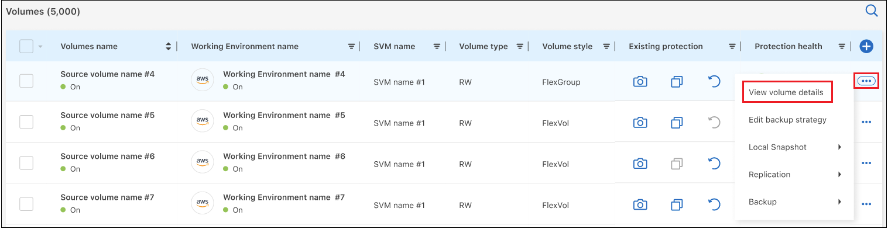
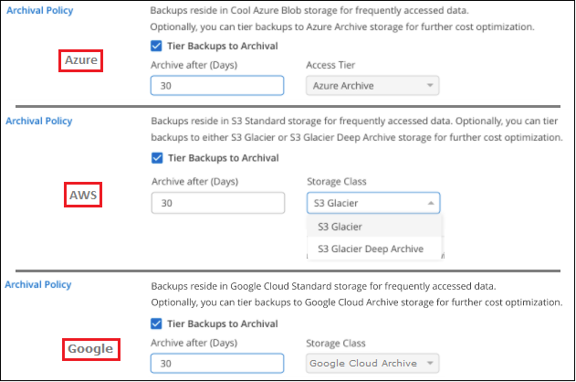

Release notes
Release notes
Manage backups for your ONTAP systems
 Suggest changes
Suggest changes
You can manage backups for your Cloud Volumes ONTAP and on-premises ONTAP systems by changing the backup schedule, enabling/disabling volume backups, pausing backups, deleting backups, and more. This includes all types of backups, including Snapshot copies, replicated volumes, and backup files in object storage.

|
Do not manage or change backup files directly on your storage systems or from your cloud provider environment. This may corrupt the files and will result in an unsupported configuration. |
View the backup status of volumes in your working environments
You can view a list of all the volumes that are currently being backed up in the Volumes Backup Dashboard. This includes all types of backups, including Snapshot copies, replicated volumes, and backup files in object storage. You can also view the volumes in those working environments that are not currently being backed up.
-
From the BlueXP menu, select Protection > Backup and recovery.
-
Click the Volumes tab to view the list of backed up volumes for your Cloud Volumes ONTAP and on-premises ONTAP systems.

-
If you are looking for specific volumes in certain working environments, you can refine the list by working environment and volume. You can also use the search filter, or you can sort the columns based on volume style (FlexVol or FlexGroup), volume type, and more.
To show additional columns (aggregates, security style (Windows or UNIX), snapshot policy, replication policy, and backup policy), select
 .
. -
Review the status of the protection options in the "Existing protection" column. The 3 icons stand for "Local Snapshot copies", "Replicated volumes", and "Backups in object storage".

Each icon is blue when that backup type is activated, and it's grey when the backup type is inactive. You can hover your cursor over each icon to see the backup policy that is being used, and other pertinent information for each type of backup.
Activate backup on additional volumes in a working environment
If you activated backup only on some of the volumes in a working environment when you first enabled BlueXP backup and recovery, you can activate backups on additional volumes later.
-
From the Volumes tab, identify the volume on which you want to activate backups, select the Actions menu
 at the end of the row, and select Activate backup.
at the end of the row, and select Activate backup.
-
In the Define backup strategy page, select the backup architecture, and then define the policies and other details for Local Snapshot copies, Replicated volumes, and Backup files. See the details for backup options from the initial volumes you activated in this working environment. Then click Next.
-
Review the backup settings for this volume, and then click Activate Backup.
If you want to activate backup on multiple volumes at the same time with identical backup settings, see Edit backup settings on multiple volumes for details.
Change the backup settings assigned to existing volumes
You can change the backup policies assigned to your existing volumes that have assigned policies. You can change the policies for your Local Snapshot copies, Replicated volumes, and Backup files. Any new Snapshot, replication, or backup policy that you want to apply to the volumes must already exist.
Edit backup settings on a single volume
-
From the Volumes tab, identify the volume that you want to make policy changes, select the Actions menu
at the end of the row, and select Edit backup strategy.
-
In the Edit backup strategy page, make changes to the existing backup policies for Local Snapshot copies, Replicated volumes, and Backup files and click Next.
If you enabled DataLock and Ransomware Protection for cloud backups in the initial backup policy when activating BlueXP backup and recovery for this cluster, you'll only see other policies that have been configured with DataLock. And if you did not enable DataLock and Ransomware Protection when activating BlueXP backup and recovery, you'll only see other cloud backup policies that don't have DataLock configured.
-
Review the backup settings for this volume, and then click Activate Backup.
Edit backup settings on multiple volumes
If you want to use the same backup settings on multiple volumes, you can activate or edit backup settings on multiple volumes at the same time. You can select volumes that have no backup settings, only Snapshot settings, only backup to cloud settings, and so on, and make bulk changes across all these volumes with diverse backup settings.
When working with multiple volumes, all volumes must have these common characteristics:
-
same working environment
-
same style (FlexVol or FlexGroup volume)
-
same type (Read-write or Data Protection volume)
-
From the Volumes tab, filter by the working environment on which the volumes reside.
-
Select all the volumes on which you want to manage backup settings.
-
Depending on the type of backup action you want to configure, click the button in the Bulk actions menu:

Backup action… Click this button… Manage Snapshot backup settings
Manage Local Snapshots
Manage Replication backup settings
Manage Replication
Manage Backup to cloud backup settings
Manage Backup
Manage multiple types of backup settings. This option enables you to change the backup architecture as well.
Manage Backup and Recovery
-
In the backup page that appears, make changes to the existing backup policies for Local Snapshot copies, Replicated volumes, or Backup files and click Save.
If you enabled DataLock and Ransomware Protection for cloud backups in the initial backup policy when activating BlueXP backup and recovery for this cluster, you'll only see other policies that have been configured with DataLock. And if you did not enable DataLock and Ransomware Protection when activating BlueXP backup and recovery, you'll only see other cloud backup policies that don't have DataLock configured.
Create a manual volume backup at any time
You can create an on-demand backup at any time to capture the current state of the volume. This can be useful if very important changes have been made to a volume and you don't want to wait for the next scheduled backup to protect that data. You can also use this functionality to create a backup for a volume that is not currently being backed up and you want to capture its current state.
You can create an ad-hoc Snapshot copy or backup to object of a volume. You can't create an ad-hoc replicated volume.
The backup name includes the timestamp so you can identify your on-demand backup from other scheduled backups.
If you enabled DataLock and Ransomware Protection when activating BlueXP backup and recovery for this cluster, the on-demand backup also will be configured with DataLock, and the retention period will be 30 days. Ransomware scans are not supported for ad-hoc backups. Learn more about DataLock and Ransomware protection.
Note that when creating an ad-hoc backup, a Snapshot is created on the source volume. Since this Snapshot is not part of a normal Snapshot schedule, it will not rotate off. You may want to manually delete this Snapshot from the source volume once the backup is complete. This will allow blocks related to this Snapshot to be freed up. The name of the Snapshot will begin with cbs-snapshot-adhoc-. See how to delete a Snapshot using the ONTAP CLI.

|
On-demand volume backup isn't supported on data protection volumes. |
-
From the Volumes tab, click for the volume and select Backup > Create Ad-hoc Backup.

The Backup Status column for that volume displays "In Progress" until the backup is created.
View the list of backups for each volume
You can view the list of all backup files that exist for each volume. This page displays details about the source volume, destination location, and backup details such as last backup taken, the current backup policy, backup file size, and more.
-
From the Volumes tab, click for the source volume and select View volume details.

The details for the volume and the list of Snapshot copies are displayed by default.

-
Select Snapshot, Replication, or Backup to see the list of all backup files for each type of backup.

Run a ransomware scan on a volume backup in object storage
NetApp ransomware protection software scans your backup files to look for evidence of a ransomware attack when a backup to object file is created, and when data from a backup file is being restored. You can also run an on-demand ransomware protection scan at any time to verify the usability of a specific backup file in object storage. This can be useful if you have had a ransomware issue on a particular volume and you want to verify that the backups for that volume are not affected.
This feature is available only if the volume backup was created from a system with ONTAP 9.11.1 or greater, and if you enabled DataLock and Ransomware Protection in the backup to object policy.
-
From the Volumes tab, click for the source volume and select View volume details.
The details for the volume are displayed.
-
Select Backup to see the list of backup files in object storage.

-
Click for the volume backup file you want to scan for ransomware and click Scan for Ransomware.

The Ransomware Protection column will show that the scan is In Progress.
Manage the replication relationship with the source volume
After you set up data replication between two systems, you can manage the data replication relationship.
-
From the Volumes tab, click for the source volume and select the Replication option. You can see all of the available options.
-
Select the replication action that you want to perform.

The following table describes the available actions:
Action Description View Replication
Shows you details about the volume relationship: transfer information, last transfer information, details about the volume, and information about the protection policy assigned to the relationship.
Update Replication
Starts an incremental transfer to update the destination volume to be synchronized with the source volume.
Pause Replication
Pause the incremental transfer of Snapshot copies to update the destination volume. You can Resume later if you want to restart the incremental updates.
Break Replication
Breaks the relationship between the source and destination volumes, and activates the destination volume for data access - makes it read-write.
This option is typically used when the source volume cannot serve data due to events such as data corruption, accidental deletion, or an offline state.
Learn how to configure a destination volume for data access and reactivate a source volume in the ONTAP documentationAbort Replication
Disables backups of this volume to the destination system, and it also disables the ability to restore a volume. Any existing backups will not be deleted. This does not delete the data protection relationship between the source and destination volumes.
Reverse Resync
Reverses the roles of the source and destination volumes. Contents from the original source volume are overwritten by contents of the destination volume. This is helpful when you want to reactivate a source volume that went offline.
Any data written to the original source volume between the last data replication and the time that the source volume was disabled is not preserved.Delete Relationship
Deletes the data protection relationship between the source and destination volumes, which means that data replication no longer occurs between the volumes. This action does not activate the destination volume for data access - meaning it does not make it read-write. This action also deletes the cluster peer relationship and the storage VM (SVM) peer relationship, if there are no other data protection relationships between the systems.
After you select an action, BlueXP updates the relationship.
Edit an existing backup to cloud policy
You can change the attributes for a backup policy that is currently applied to volumes in a working environment. Changing the backup policy affects all existing volumes that are using the policy.
|
|
|
-
From the Volumes tab, select Backup Settings.

-
From the Backup Settings page, click for the working environment where you want to change the policy settings, and select Manage Policies.

-
From the Manage Policies page, click Edit for the backup policy you want to change in that working environment.

-
From the Edit Policy page, click
 to expand the Labels & Retention section to change the schedule and/or backup retention, and click Save.
to expand the Labels & Retention section to change the schedule and/or backup retention, and click Save.
If your cluster is running ONTAP 9.10.1 or greater, you also have the option to enable or disable tiering of backups to archival storage after a certain number of days.

Note that any backup files that have been tiered to archival storage are left in that tier if you stop tiering backups to archive - they are not automatically moved back to the standard tier. Only new volume backups will reside in the standard tier.
Add a new backup to cloud policy
When you enable BlueXP backup and recovery for a working environment, all the volumes you initially select are backed up using the default backup policy that you defined. If you want to assign different backup policies to certain volumes that have different recovery point objectives (RPO), you can create additional policies for that cluster and assign those policies to other volumes.
If you want to apply a new backup policy to certain volumes in a working environment, you first need to add the backup policy to the working environment. Then you can apply the policy to volumes in that working environment.
|
|
|
-
From the Volumes tab, select Backup Settings.
-
From the Backup Settings page, click for the working environment where you want to add the new policy, and select Manage Policies.
-
From the Manage Policies page, click Add New Policy.

-
From the Add New Policy page, click
to expand the Labels & Retention section to define the schedule and backup retention, and click Save.
If your cluster is running ONTAP 9.10.1 or greater, you also have the option to enable or disable tiering of backups to archival storage after a certain number of days.
Delete backups
BlueXP backup and recovery enables you to delete a single backup file, delete all backups for a volume, or delete all backups of all volumes in a working environment. You might want to delete all backups if you no longer need the backups, or if you deleted the source volume and want to remove all backups.
Note that you can't delete backup files that you have locked using DataLock and Ransomware protection. The "Delete" option will be unavailable from the UI if you have selected one or more locked backup files.
|
|
If you plan to delete a working environment or cluster that has backups, you must delete the backups before deleting the system. BlueXP backup and recovery doesn't automatically delete backups when you delete a system, and there is no current support in the UI to delete the backups after the system has been deleted. You'll continue to be charged for object storage costs for any remaining backups. |
Delete all backup files for a working environment
Deleting all backups on object storage for a working environment does not disable future backups of volumes in this working environment. If you want to stop creating backups of all volumes in a working environment, you can deactivate backups as described here.
Note that this action does not affect Snapshot copies or replicated volumes - these types of backup files are not deleted.
-
From the Volumes tab, select Backup Settings.
-
Click for the working environment where you want to delete all backups and select Delete All Backups.

-
In the confirmation dialog box, enter the name of the working environment and click Delete.
Delete a single backup file for a volume
You can delete a single backup file if you no longer need it. This includes deleting a single backup of a volume Snapshot copy or of a backup in object storage.
You can't delete replicated volumes (data protection volumes).
-
From the Volumes tab, click for the source volume and select View volume details.
The details for the volume are displayed, and you can select Snapshot, Replication, or Backup to see the list of all backup files for the volume. By default, the available Snapshot copies are displayed.
-
Select Snapshot or Backup to see the type of backup files that you want to delete.
-
Click for the volume backup file you want to delete and click Delete. The screenshot below is from a backup file in object storage.

-
In the confirmation dialog box, click Delete.
Delete volume backup relationships
Deleting the backup relationship for a volume provides you with an archiving mechanism if you want to stop the creation of new backup files and delete the source volume, but retain all the existing backup files. This gives you the ability to restore the volume from the backup file in the future, if needed, while clearing space from your source storage system.
You don't necessarily need to delete the source volume. You can delete the backup relationship for a volume and retain the source volume. In this case you can "Activate" backup on the volume at a later time. The original baseline backup copy continues to be used in this case - a new baseline backup copy is not created and exported to the cloud. Note that if you do reactivate a backup relationship, the volume is assigned the default backup policy.
This feature is available only if your system is running ONTAP 9.12.1 or greater.
You can't delete the source volume from the BlueXP backup and recovery user interface. However, you can open the Volume Details page on the Canvas, and delete the volume from there.
|
|
You can't delete individual volume backup files once the relationship has been deleted. You can, however, delete all backups for the volume if you want to remove all backup files. |
-
From the Volumes tab, click for the source volume and select Backup > Delete relationship.

Deactivate BlueXP backup and recovery for a working environment
Deactivating BlueXP backup and recovery for a working environment disables backups of each volume on the system, and it also disables the ability to restore a volume. Any existing backups will not be deleted. This does not unregister the backup service from this working environment - it basically allows you to pause all backup and restore activity for a period of time.
Note that you'll continue to be charged by your cloud provider for object storage costs for the capacity that your backups use unless you delete the backups.
-
From the Volumes tab, select Backup Settings.
-
From the Backup Settings page, click for the working environment where you want to disable backups and select Deactivate Backup.

-
In the confirmation dialog box, click Deactivate.
|
|
An Activate Backup button appears for that working environment while backup is disabled. You can click this button when you want to re-enable backup functionality for that working environment. |
Unregister BlueXP backup and recovery for a working environment
You can unregister BlueXP backup and recovery for a working environment if you no longer want to use backup functionality and you want to stop being charged for backups in that working environment. Typically this feature is used when you're planning to delete a working environment, and you want to cancel the backup service.
You can also use this feature if you want to change the destination object store where your cluster backups are being stored. After you unregister BlueXP backup and recovery for the working environment, then you can enable BlueXP backup and recovery for that cluster using the new cloud provider information.
Before you can unregister BlueXP backup and recovery, you must perform the following steps, in this order:
-
Deactivate BlueXP backup and recovery for the working environment
-
Delete all backups for that working environment
The unregister option is not available until these two actions are complete.
-
From the Volumes tab, select Backup Settings.
-
From the Backup Settings page, click for the working environment where you want to unregister the backup service and select Unregister.

-
In the confirmation dialog box, click Unregister.